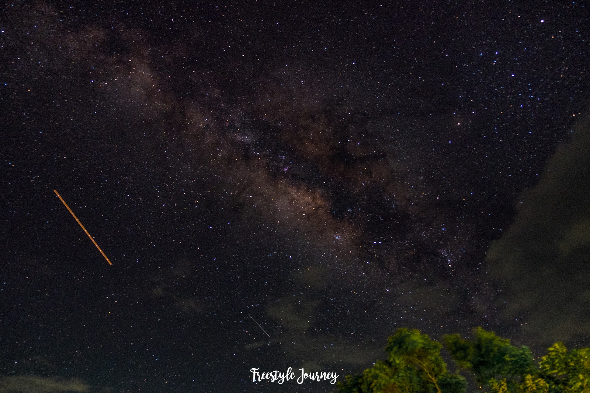
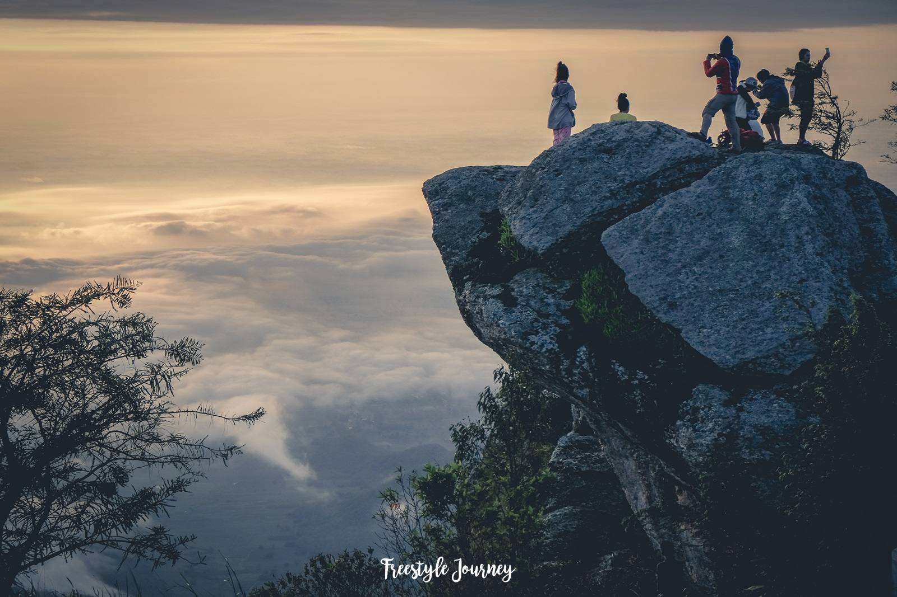
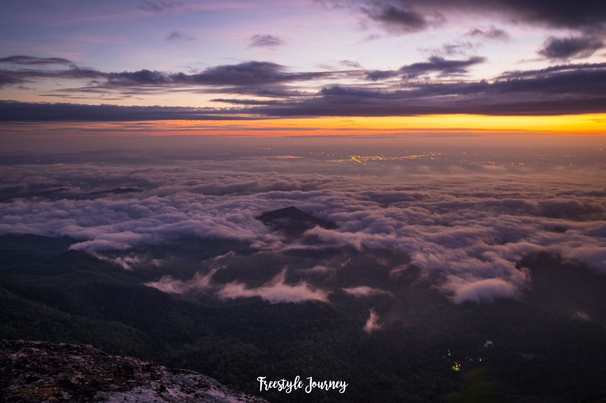

อุทยานแห่งชาติรามคำแหง

อุทยานแห่งชาติรามคำแหง
มีเนื้อที่ครอบคลุมอยู่ในท้องที่อำเภอบ้านด่านลานหอย อำเภอคีรีมาศ และอำเภอเมือง จังหวัดสุโขทัย เป็นอุทยานแห่งชาติทางประวัติศาสตร์ ประกอบด้วยปูชนียวัตถุอันเป็นโบราณสถานสมัยกรุงสุโขทัยเป็นราชธานี มีสภาพป่าอันอุดมสมบูรณ์เป็นแหล่งต้นน้ำลำธาร ตลอดจนมีสภาพธรรมชาติและทิวทัศน์ที่สวยงาม เช่น น้ำตกสายรุ้ง อุทยานแห่งชาติรามคำแหงมีเนื้อที่ประมาณ 213,125 ไร่ หรือ 341 ตารางกิโลเมตรภูมิประเทศ
- เป็นเทือกเขาขนาดใหญ่ ที่ตั้งสูงขึ้นไปจากที่ราบคล้ายจอมปลวก แยกตัวจากเทือกเขาอื่นโดยเด่นชัด มีลักษณะเป็นเขาสูงสลับซับซ้อน ทอดตัวในแนวเหนือ-ใต้ ระหว่างจังหวัดกำแพงเพชรและสุโขทัย มีภูเขาที่สูงที่สุดคือ "เขาหลวง" ประกอบด้วย เขานารายณ์ สูง 1,160 เมตร เขาพระเจดีย์ สูง 1,185 เมตร เขาภูคา และ เขาพระแม่ย่า สูง 1,200 เมตรจากระดับน้ำทะเล


สถานที่ตั้ง
-
ตำบล นาเชิงคีรี อำเภอ คีรีมาศ สุโขทัย 64160